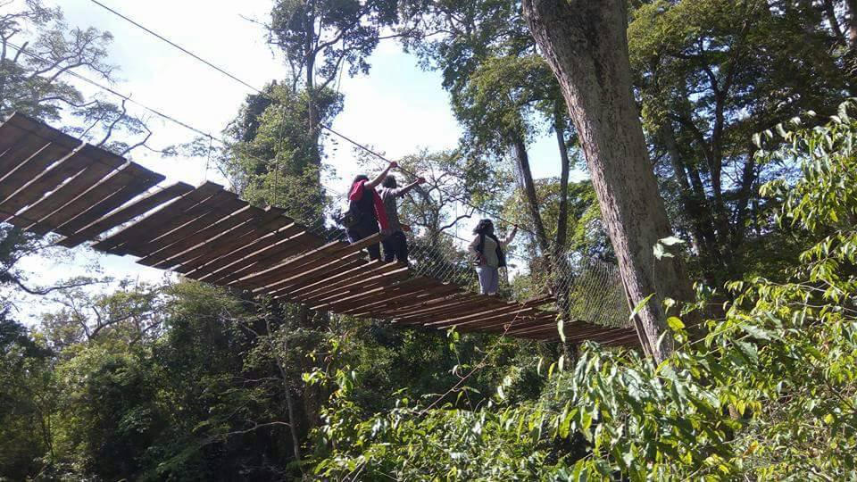

1. Mount Kenya
As the second-highest peak in Africa, Mount Kenya is a breathtaking sight. It offers various trekking routes suitable for different skill levels. Even if you’re not up for climbing, the views from lower altitudes are spectacular.
2. Mwea National Reserve
Known for its diverse wildlife, Mwea National Reserve is a great spot for game drives and birdwatching. The reserve is home to giraffes, zebras, and a variety of bird species.
3. Camp Ndunda Falls
This scenic viewpoint provides panoramic views of the surrounding landscapes. It offers Ziplining, Mudfun, Wildswing, Canopy walk, Nature trail, Archery and Swimming pool.
 Camp Ndunda is the top pick destination in Embu for family and team activities4. Embu Museum
Learn about the history and culture of the Embu people at this museum. It showcases traditional artifacts, costumes, and exhibits on local history.
5. Kiremi Falls
Enjoy the beauty of Kiremi Falls, a serene and picturesque spot ideal for relaxation and picnicking. The cascading waters create a tranquil atmosphere perfect for unwinding.
Exploring these attractions will give you a deeper appreciation of Embu’s natural beauty and cultural heritage. Make sure to set aside some time to immerse yourself in the local experiences and create lasting memories.